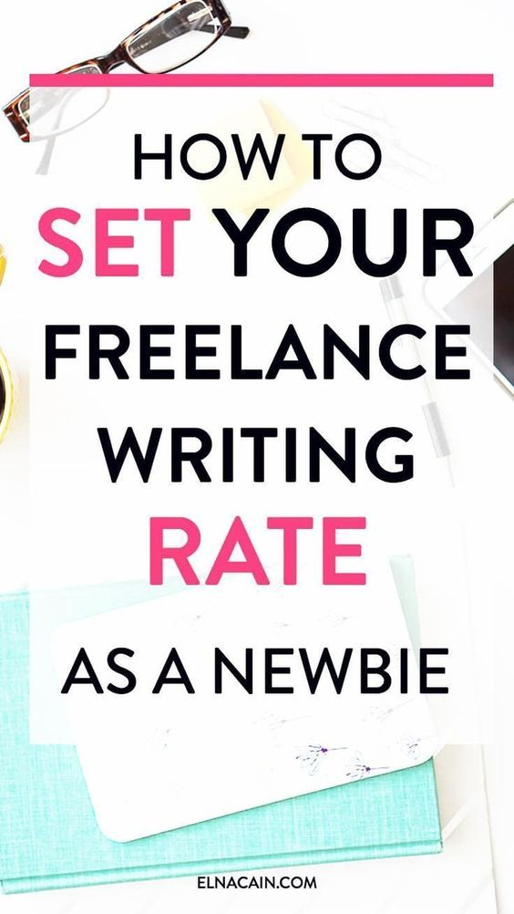

Using their command of the common language of their audience, writers conceptualize, research, write, and edit polished manuscripts, poems, articles, and other types of written content. In their role, they may work across genres, from nonfiction to poetry, fiction to satire. In a business environment, writers may work as copywriters, technical writers, blog and feature writers, and as editors. A freelance content writer is hired by most companies and even individuals to write for them. Your mission as a freelance content writer is to provide high-quality content to your clients. You'll be expected to write blog posts, articles focused on keywords, web sites, and even social media posts.

Make the most of face-to-face networking opportunities where you can connect with people and tell your story. Young professionals may attend a variety of networking events throughout the world. When it comes to referrals, the strength of a handshake can never be underestimated. "Meeting other young professionals has fuelled my creativity," says South Bend, Indiana-based writer Haleigh Ehmsen. "From technology to youth growth," she says, "networking can provide jobs you never thought you'd write about."
There's a difference between a pitch that's been copied and pasted and one that establishes your worth right away. You can interact more confidently with Grammarly, an online writing assistant. "When it comes to pitching, my rule of thumb is to keep it as short as possible," Ehmsen says. And if you don't have a high-profile portfolio, talk about what you can do. It's just as important to sell yourself as it is to sell your talents, and Gram Marly has you covered.
While several writers have been laid off or furloughed, this does not mean that no one is recruiting. During the government shutdown, several niche businesses managed to remain alive. Now is the perfect time for a writer to branch out into a new field. When combined with your submission, a good writing portfolio says more than a lack of experience in their profession. Writers should apply their resumes to companies in all sectors, as it is one of the most opportunistic writing patterns of 2020.
Requests for existing freelance writers are expected to increase. Writers moving to freelancing can set up accounts with online freelance networks to communicate with potential clients. Some businesses want to test the waters with a freelance writer before committing to a full-time position.
Companies will better engage with their existing customers and future customers with the right content marketing plan. Guest blogging services are readily available from professional bloggers. And if your company doesn't have a blogging budget, you can still write guest blog posts. In addition, a collaboration between two companies will result in featured blog posts on both companies' blogs. It's a way for them to advertise their blog on the website of a reputable organization.
Book sales were at an all-time high during the COVID-19 pandemic. Readers flocked to online booksellers, and independent bookstores hurried their ecommerce efforts in order to remain afloat. Publishers would need time to scale up their sales efforts. Even if you're not a publisher or an independent author, you can still self-publish an audiobook today. It's possible that it'll be one of the smartest writing patterns in 2020. The pandemic resulted in a 30% increase in eBook readership and a 50% increase in audiobook sales.
2021 * 10-minute read
Learn more about what it takes to start a writing career, the type of training available, and the overall occupational outlook for writers today.
Read More2020 * 5-minute read
The key to the success of your online business is starting it right. Here’s a guide on how to start an online business in the Philippines.
Read More2018 * 3-minute read
By utilizing this two-step outreach strategy, you can network and pitch your freelance writing services in a way that solidifies a steady stream of clients (and cash).
Read MoreVideo Courtesy: Maxime Ducroux
https://www.youtube.com/watch?v=PvmtnlPZYdQ
We create this content for general information purposes and all the information is base on our understanding and researches and it should not taken as advice. Always take professional advice.
Disclaimer: Note that we do not own the images and videos used in this website. All rights and credit goes directly to its rightful owners. This website is non-profit and made for educational purposes only. No copyright infringement intended.
"Copyright Disclaimer, Under Section 107 of the Copyright Act 1976, allowance is made for "fair use" for purposes such as criticism, comment, news reporting, teaching, scholarship, and research. Fair use is a use permitted by copyright statute that might
otherwise be infringing. Non-profit, educational or personal use tips the balance in favor of fair use"